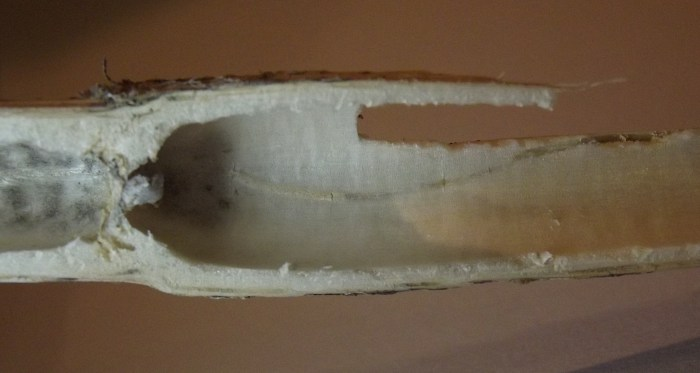
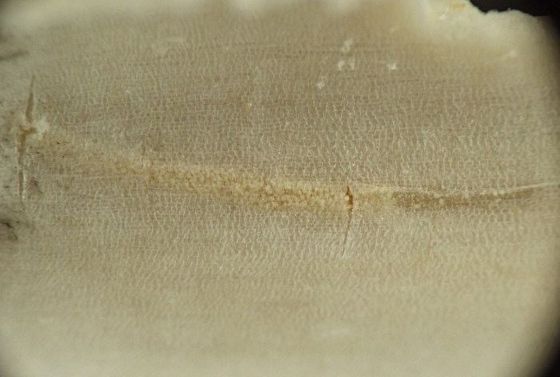
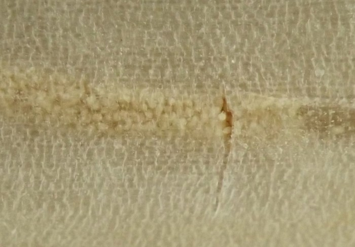
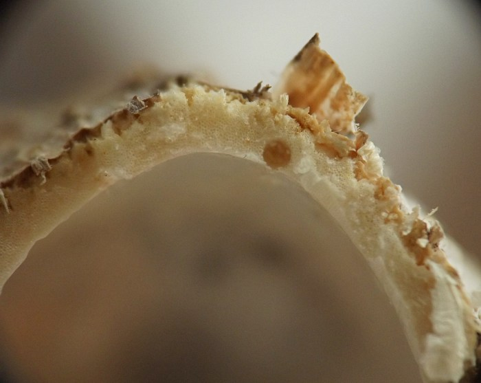
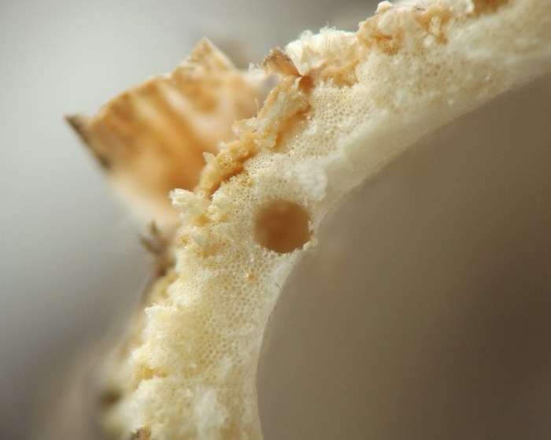
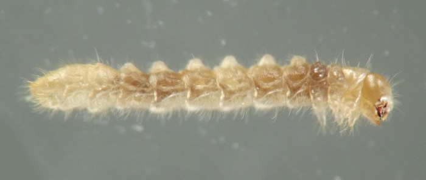
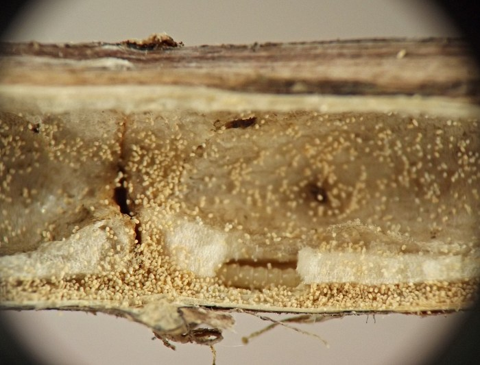
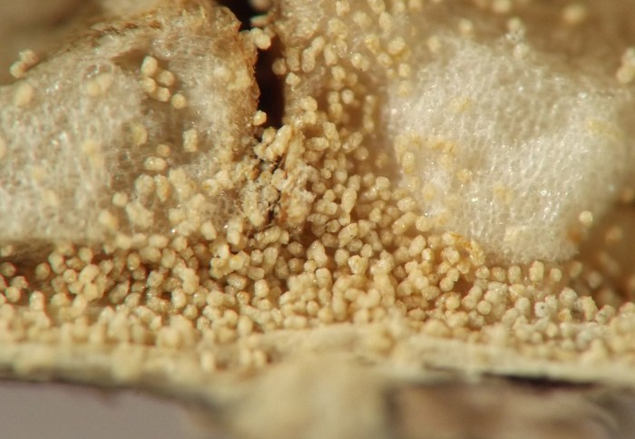
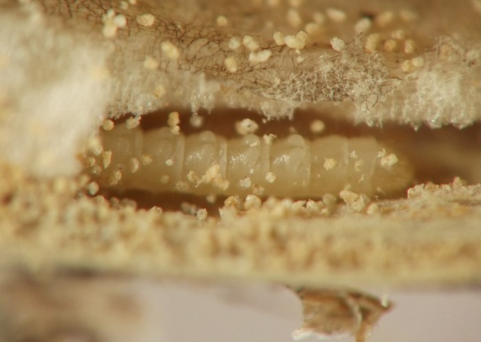
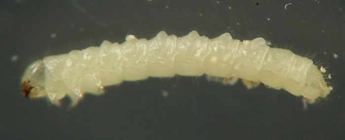

Stem borer (Coleoptera: Mordellidae) in Heracleum
| Record no.: | 0273 |
|---|---|
| Feeding guild: | Stem borer |
| Taxonomy: | Coleoptera: Mordellidae |
| Stages observed: | trace, larva |
| Distribution observed: | IA |
| Hosts in Heracleum: | H. maximum (cow parsnip) |
Cow parsnip stems are mostly hollow, but there is a layer of pith lining the inner wall of the stem that serves as food for the larva of this mordellid. The larva tunnels through the pith layer, generating copious frass pellets that fill the tunnel behind it. Tunneling may also occur in the nodes, which are more solid with pith compared to the internodal spaces. The two larvae shown below were found overwintering in their tunnels in the dead stems. Based on the appearance of these larvae it is assumed that some feeding may occur in the pith of the dead stem in spring before the larva reaches maturity.

 Prev
Prev
{kind=link}
{kind=link}

{kind=link}

{kind=link}

{kind=link}

{kind=link}

{kind=link}

{kind=link}

{kind=link}

{kind=link}

Coll. 04/04/22, photos on 04/05/22 (01-07); coll. 01/05/23, photos same day (08-11). All specimens above from Iowa, USA.
Page created: March 10, 2026. Last update: none